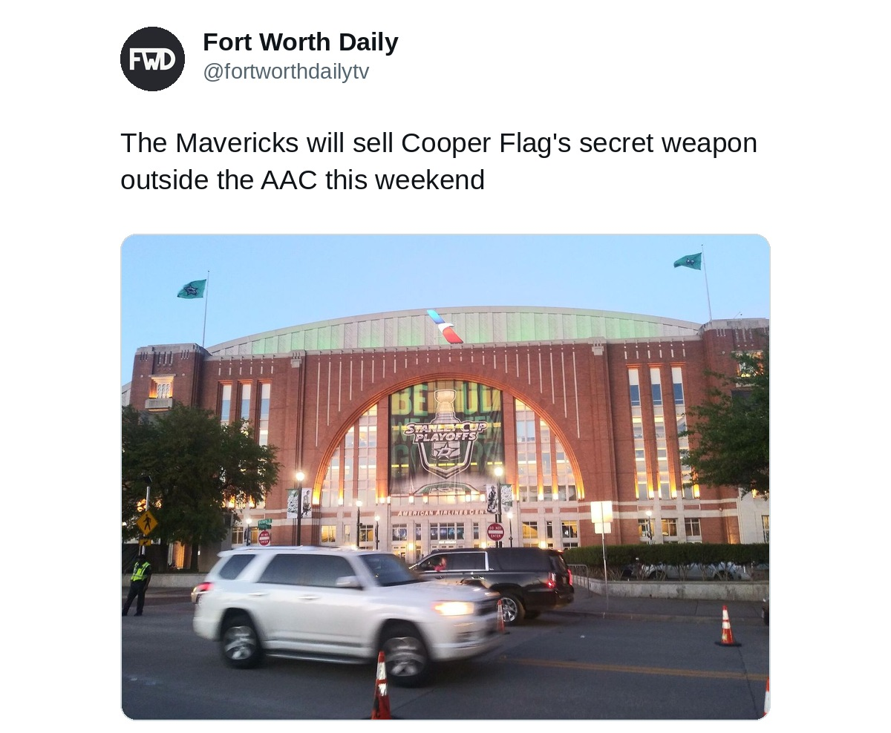

FWD
Fort Worth Daily
Just now · 🌎 · sports · template writer
Just now · 🌎 · sports · template writer
The Mavericks will sell Cooper Flag's secret weapon outside the AAC this weekend

FWD
story + scoring
{
"source": "WFAA Sports",
"kind": "rss",
"score": 1.0299,
"relevance": 2,
"url": "https://www.wfaa.com/article/sports/basketball/cooper-flagg-peanut-butter-and-jelly-pop-up-aac-the-jam-box/287-690d7924-7be8-4a56-9879-75d7a226e1cc",
"image_license": "wikimedia-cc",
"image_credit": "Photo: The World's Signature via Wikimedia Commons (CC BY-SA 4.0)"
}